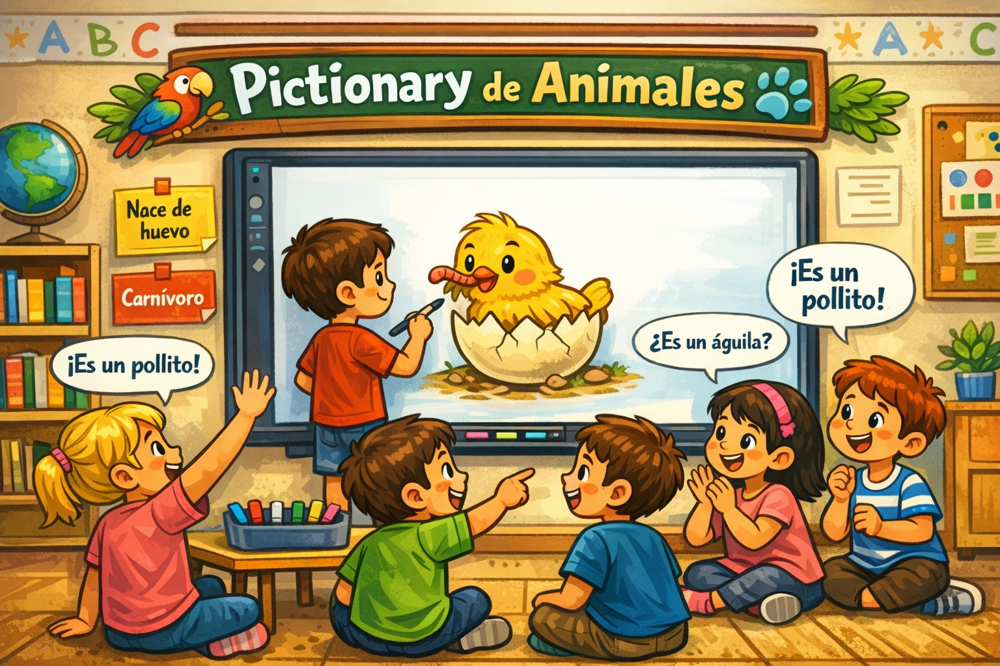

Pictionary
- Producto final
- 60:00
- Clase
- 1ºB

En esta sesión vamos a poner en práctica todo lo aprendido a través de esta actividad evaluable donde no solo aplicaremos contenidos de ciencias, sino también aquellos relacionados con el uso del puntero de la PDI.Vamos a jugar al pictionary.
¿Cómo se juega?
El alumnado se organizará por grupos. Cada grupo recibirá una tarjeta con dos características de un animal, por ejemplo: “Nace de huevo y es carnívoro.” Un miembro del grupo deberá dibujar en la PDI un animal que cumpla esas dos características, sin decir su nombre, usando para ello el panel de colores y las herramientas del puntero aprendidas. El resto del grupo intentará adivinar de qué animal se trata. Una vez haya una propuesta, se comprobará si el animal elegido coincide con las indicaciones de la tarjeta. Si coincide, el grupo gana la tarjeta; si no, habrá rebote al resto de grupos.
Las tarjetas incluirán combinaciones de características sencillas y comprensibles para el alumnado, relacionadas con lo trabajado durante el proyecto: forma de reproducción, alimentación, hábitat o rasgos visibles.